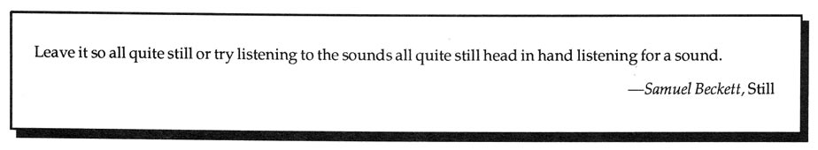

Editor's Notes
This issue of HOW(ever), dedicated to the ear that is slower than the eye--invoked by Richardson on the back cover, wants to remind of a reading practice that has since been devitalized by the machinery of standard punctuation and type. A reading that was an immersion in unbroken line, with an occasional full stop. A reading that necessitates the ear's interrogation into the rhythm, cadence and senses of language--unspoken, in the act of being written, or on the page. It has been suggested that the shift in discourse away from the privileged and observant "western" eye to the featuring of any other sense, is also a shift away from a male-governed hierarchical structure.* Irigaray characterizes this shift as "feminine," and says
The range of listening requested in this issue also implies and sometimes directly imagines such a shift. * Among many sources for discussions of this idea, a few that come readily to mind include: James Clifford, editor, The Poetics and Politics of Ethnography,
University of California Press, 1986; Stephen Tyler, "The Vision Quest in the West, or What the Mind's Eye Sees,"
Journal of Anthropological Research,
40, No. 1: 23-40; Donald Lowe, The History of Bourgeois Perception,
University of Chicago Press: 1982; Jacqueline Rose, Sexuality in the Field of Vision,
London, Verso: 1986; Teresa de Lauretis, and Stephen Heath, editors, The Cinematic Apparatus,
London, Macmillan: 1980. ** Luce Irigaray, "The Power of Discourse," in This Sex Which Is Not One,
Porter and Burke, translators, Cornell University Press, New York, 1985: page 79. • For background on Correspondence Art check Correspondence Art,
Michael Crane and Mary Stofflet editors, San Francisco, Contemporary Art Press, 1984. The latest work from Susan King (whose postcard series is discussed above) includes Say, See, Bone, Lessons from French
and Lessons from the South,
available from Granary Books, 626 Broadway, New York, New York. On the subject of postcard poems, Alice Notley writes that most of the poems in her At Night The States
(and all of the poems in Ted Berrigan's A Certain Slant of Sunlight)
were originally written on blank postcards. They were commissioned by Ken & Ann Mikolowski of the Alternative Press (Grindstone City, Michigan), & were sent out originally as holograph one-of-a-kind items in packets of other publications (bookmarks, broadsides, etc.). Many of them were hand-illustrated by the poet or by artist friends. New books of note: Breaking the Sequence: Women's Experimental Fiction,
edited by Ellen G. Friedman and Miriam Fuchs, Princeton University Press, includes, among others, essays by Rachel Blau DuPlessis on "Woolfenstein," Marianne DeKoven on "Male Signature, Female Aesthetic: The Gender Politics of Experimental Writing," Kathleen Fraser on Barbara Guest's Seeking Air,
and Marjorie Perloff on "Fiction as Language Game: The Hermeneutic Parallels of Lydia Davis and Maxine Chernoff.". . . Double Negative
by Daphne Marlatt and Betsy Warland, gynergy books, Charlottetown, 1988; Marianne Moore, special issue, Sagetrieb,
vol. 6, no. 3 (winter 1987)--available from National Poetry Foundation, Orono, Maine 04469; Griselda Pollock, Vision & Difference: Feminists, Feminism & the History of Art (London: Routledge, 1988); Gertrude Stein and the Making of Literature,
ed. Shirley Neuman and Ira B. Nadel, Boston: Northwestern University Press, 1988 includes essays by DeKoven, Sayre, Dydo, Perloff, Schmitz, bpNichol, and others; includes three newly published Stein works; Mary Jacobus, Reading Woman: Essays in Feminist Criticism,
Columbia University Press, 1986; and Mirage, The Women's Issue,
no. 3, edited by Dodie Bellamy, is just out and available from Small Press Distribution, 1814 San Pablo Avenue, Berkeley, California 94702, or from Small Press Traffic, 3599 24th Street, San Francisco, California 94110. HOW(ever),
ISSN 0895-5-5743, is available in a fifth series of four numbers. For libraries interested in purchasing the complete series, beginning with Vol. I, we have a limited number of archival sets. Archival sets cost $12 per volume for individuals; $15 for institutions. Subscriptions for Vol. V cost $8 for individuals; $10 for institutions. Individual copies of HOW(ever),
often asked for as "sample copies," are available at $2.50 each from Small Press Distribution, 1814 San Pablo, Berkeley, CA 94702. Subscription checks to HOW(ever),
c/o Fraser, 1936 Leavenworth, San Francisco, California 94133. 


 --Susan Gevirtz
--Susan Gevirtz